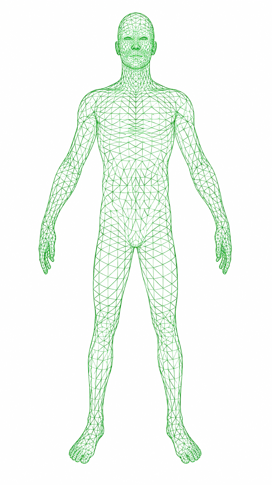

Sin datos cargados
Sube el archivo exportado desde la app o báscula Fitdays. Todo el procesamiento ocurre en tu navegador; ningún dato sale de este dispositivo.
Arrastra tu archivo CSV aquí, o
Comparación entre tu primer y último registro cargado, métrica por métrica.
Verde = avance claro · Amarillo = señal a vigilar · Rojo = alerta o retroceso.
Evolución completa de tus registros, del más antiguo al más reciente.
Grasa y balance muscular por zona del cuerpo: medición actual vs. la inmediatamente anterior.
Comparación por zona del cuerpo, según el periodo que elijas.

Todos los registros procesados, de más antiguo a más reciente.